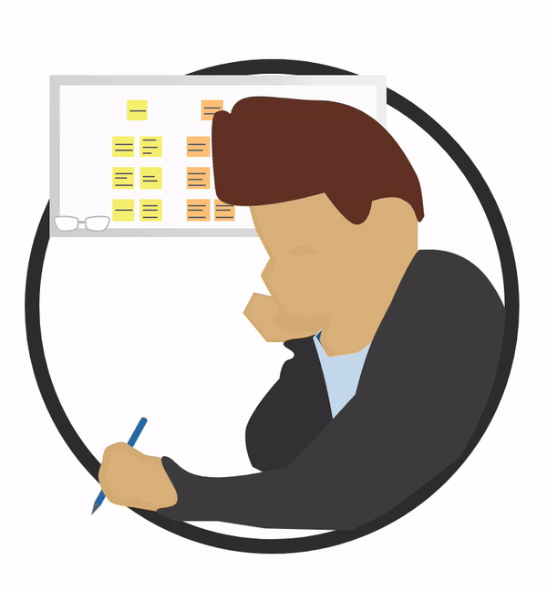

FDA governement website redesign — case study.
The FDA website displays issues in consistency, hierarchy, and usability. I worked with a partner to make consistent use of cards and buttons, as well as changes in how one would navigate the website.